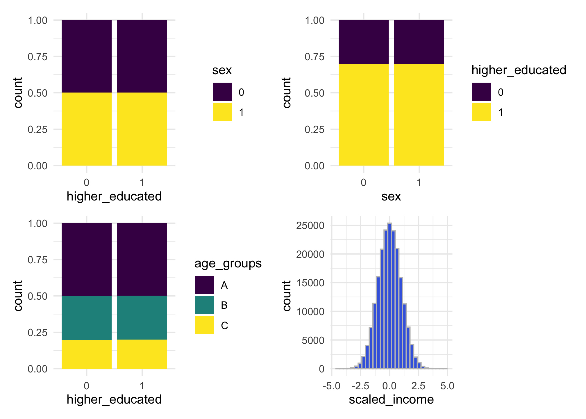
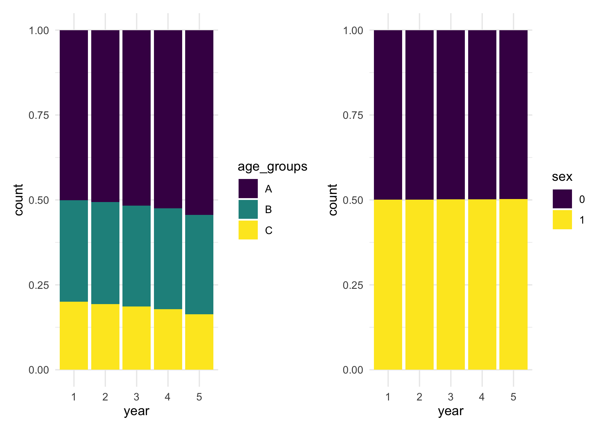
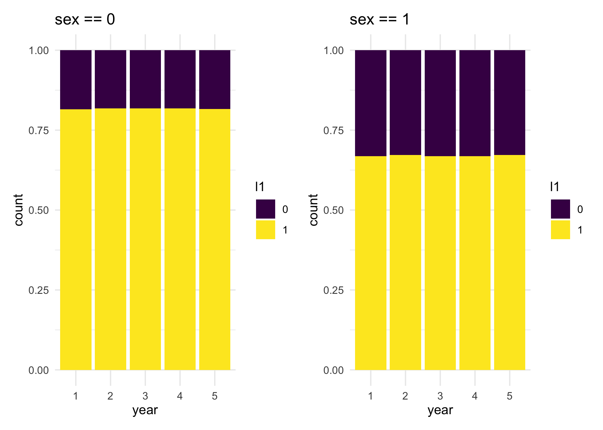
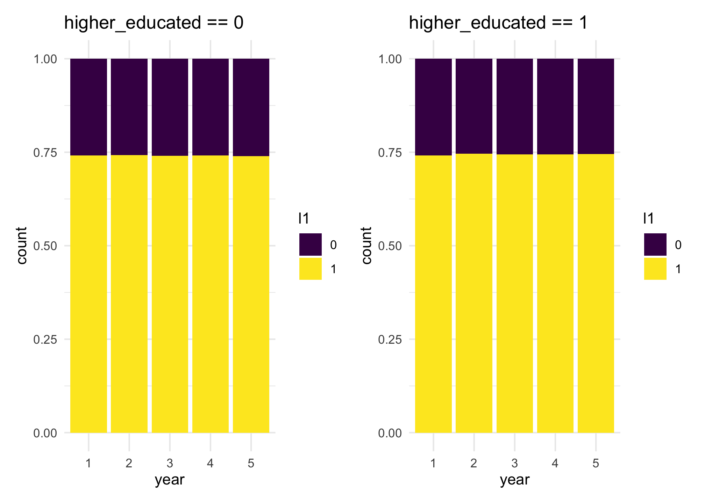

A package to estimate overcoverage on register based data considering Multiple System Estimation (MSE) models, based on the package conting.
The discussion of this method is available on the paper:
- Mussino, E., Santos, B., Monti, A. et al. Multiple systems estimation for studying over-coverage and its heterogeneity in population registers. Quality & Quantity (2023). https://doi.org/10.1007/s11135-023-01757-x
Prerequisites
Before using this package, you need to install the archived package conting. Because the package is archived, we need to install it in a different way. Using the package devtools, we can use the following code
devtools::install_version("conting",
version = "1.7")After installing conting, you can install our package, also using devtools with the following lines
devtools::install_github("brsantos/overcoverage")Creating a population
Because this type of data is sensitive and not publicly available, we create functions that are able to recreate similar scenarios to showcase the use of this package.
First, we can create a general database, with a similar purpose as the Register of Total Population (RTB) in Sweden. We assume that if someone enter the country, they are definitely in this dataset. For this use the function create_population.
We can define how many people enter the country each year, for the purpose of comparison with different countries, for instance. We can create dummy variables, that could represent information such as sex (male or female), employed (yes or no), among others. We can create numerical variables that could represent income, age, time in the country, etc. And lastly, we can create factor variables with three levels. These could represent age groups, income groups or any other type of grouping.
In case there is interest in another type of variable, adaptation for this function are easy to implement. The binary variables are able to receive the proportion of successful cases, for instance. We can easily create a binary variable with equal proportion in the population, such as sex, or we could create a variable with the proportion of people employed, with values higher than 0.5 for example.
In the following example, we show how to create a population of 200,000 individuals. We create 2 binary variables, with names sex and higher_educated. One categorical variable named age_groups and numerical variable called scaled_income. By default, the categories for the factor variable are sampled with probabilities 0.5, 0.3 and 0.2, but this can be changed.
set.seed(42)
library(overcoverage)
main_pop <- create_population(
size = 2e5,
n_bin = 2,
n_cont_var = 1,
n_cat_var = 1,
prob_bin = c(0.5, 0.7),
names_bin = c("sex", "higher_educated"),
names_cont = "scaled_income",
names_cat_var = "age_groups")We can make plots to look at their distribution across the population. Because each variable is independent from the other, it seems that are bars have the same height, but there are slightly variations in each one of the bars.
library(ggplot2)
library(patchwork)
g <- ggplot(main_pop) + theme_minimal()
g1 <- g + geom_bar(aes(fill = factor(sex),
x = factor(higher_educated)),
position = "fill") +
labs(x = "higher_educated") +
scale_fill_viridis_d(name = "sex")
g2 <- g + geom_bar(aes(fill = factor(higher_educated),
x = factor(sex)),
position = "fill") +
labs(x = "sex") +
scale_fill_viridis_d(name = "higher_educated")
g3 <- g + geom_bar(aes(fill = factor(age_groups),
x = factor(higher_educated)),
position = "fill") +
labs(x = "higher_educated") +
scale_fill_viridis_d(name = "age_groups")
g4 <- g + geom_histogram(aes(x = scaled_income),
fill = "royalblue", color = "grey75")
g1 + g2 + g3 + g4
Presence in the country
Given a fixed population, we can create a matrix with the information about when each one of these individuals were present in the country. We can assume either that all of them arrived in the first year or that they have arrived throughout a number of years. For the second option, we can select whether they arrived constantly or not.
We control the probability of each individual leaving the country given a linear predictor, which is used within a logistic regression model. For instance, in the following example we can say that the probability of leaving the country, ϕ, is a function of age groups only with the following equation
$$\log \begin{pmatrix}\frac{\phi_i}{1 - \phi_i} \end{pmatrix} = \beta_0 + \beta_1 X_B + \beta_2 X_C,$$
where Xi is a indicator variable that is equal to 1, if age_groups is equal to i and 0 otherwise. In the following example, we set β0 = 2, β1 = − 0.5 and β2 = − 1 and we set the arrivals to happen constantly over 4 years.
presences <- create_presences(main_pop,
formula_phi = ~ age_groups,
coef_values = c(2.5, -0.5, -1),
years = 5, varying_arrival = TRUE)
# checking how many presences each year
colSums(presences)
#> [1] 50000 94522 134216 169668 151283For the purpose of all people being there at least one year, there are no arrivals in the last year. That’s the reason why there are 50,000 arrivals in the first year and every year until year 4 and none in year 5.
We can see the effect of age groups in the probability of staying in the country by looking at the distribution of age groups over the years. The distribution changes over the years, while the distribution of sex does not change in comparison.
library(tidyr)
library(dplyr)
info_presence <- data.frame(
id = main_pop$id,
age_groups = main_pop$age_groups,
sex = main_pop$sex,
presences) %>%
pivot_longer(cols = starts_with("X"),
names_to = "year",
names_prefix = "X",
values_to = "presence")
p1 <- ggplot(filter(info_presence, presence == 1)) +
theme_minimal() +
geom_bar(aes(x = year, fill = age_groups), position = "fill") +
scale_fill_viridis_d()
p2 <- ggplot(filter(info_presence, presence == 1)) +
theme_minimal() +
geom_bar(aes(x = year, fill = factor(sex)), position = "fill") +
scale_fill_viridis_d(name = "sex")
p1 + p2
Creating lists/registers
The model is based on the observation of individuals in different lists or registers. For instance, there could be a register with people being employed or a register with marriages. We can simulate these registers similarly to what we did with the probability of leaving the country. The probability of appearing in a given register can depend on different variables available in the main data set.
Let’s create three different lists, where the probability of appearing in each one of these lists will depend separately on three different variables we created: sex, higher_educated and scaled_income. This can be done in the following manner.
l1 <- create_list_presences(
main_pop,
presences,
formula_prob = ~ sex,
coef_values = c(1.5, -0.8))
l2 <- create_list_presences(
main_pop,
presences,
formula_prob = ~ higher_educated,
coef_values = c(0.5, -0.2))
l3 <- create_list_presences(
main_pop,
presences,
formula_prob = ~ scaled_income,
coef_values = c(-0.5, 1))With these coefficient values used, we can calculate the probability of appearing in each one of the lists. For l1, we can say that people with sex == 0 have a probability of appearing in the list equal to 0.818, while for people with sex == 1 the probability is equal to 0.668. This can be calculated using the inverse of the logit function with
$$\frac{\exp(1.5)}{1 + \exp(1.5)} = 0.818 \quad \mbox{ and } \quad \frac{\exp(1.5 - 0.8)}{1 + \exp(1.5 - 0.8)} = 0.668$$
We can observe this quantities using similar plots as before for the variation of the presence over the years.
info_l1 <- data.frame(
id = main_pop$id,
higher_educated = main_pop$higher_educated,
sex = main_pop$sex,
l1) %>%
pivot_longer(cols = starts_with("X"),
names_to = "year",
names_prefix = "X",
values_to = "l1")
# checking if the other of the ids is the same, so we merge the same information
all.equal(info_presence$id, info_l1$id)
#> [1] TRUE
all.equal(info_presence$year, info_l1$year)
#> [1] TRUE
# if this was not the case, then a different approach would be necessary to
# join the bases
# combining the columns since the ids are all the same
all_info <- info_presence %>%
mutate(higher_educated = info_l1$higher_educated,
sex = info_l1$sex,
l1 = info_l1$l1)
l1_sex0 <- ggplot(filter(all_info, sex == 0, presence == 1)) +
theme_minimal() +
geom_bar(aes(x = year, fill = factor(l1)), position = "fill") +
scale_fill_viridis_d(name = "l1") +
labs(title = "sex == 0")
l1_sex1 <- ggplot(filter(all_info, sex == 1, presence == 1)) +
theme_minimal() +
geom_bar(aes(x = year, fill = factor(l1)), position = "fill") +
scale_fill_viridis_d(name = "l1") +
labs(title = "sex == 1")
l1_sex0 + l1_sex1
If we do the same plots, while considering the same list l1, but looking at the probability of being selected given variable higher_educated, we will see that they should have approximately the same probability of being selected to l1, roughly the average between 0.818 and 0.668, which is 0.743
l1_he0 <- ggplot(filter(all_info, higher_educated == 0, presence == 1)) +
theme_minimal() +
geom_bar(aes(x = year, fill = factor(l1)), position = "fill") +
scale_fill_viridis_d(name = "l1") +
labs(title = "higher_educated == 0")
l1_he1 <- ggplot(filter(all_info, higher_educated == 1, presence == 1)) +
theme_minimal() +
geom_bar(aes(x = year, fill = factor(l1)), position = "fill") +
scale_fill_viridis_d(name = "l1") +
labs(title = "higher_educated == 1")
l1_he0 + l1_he1
Modelling overcoverage
Considering the observation of these different lists and the information of all people present in the country in a given year, we can compare how our model can help in the estimation of over-coverage.
For instance, we can compare in year 5 how many people are detected in the three lists and how many are present in the country.
# People observed at least once in the different lists in year 5.
n_observed <- sum((l1[, 5] + l2[, 5] + l3[, 5]) > 0)
# People present in the country in year 5.
n_present <- sum(presences[, 5])
# Difference
n_present - n_observed
#> [1] 9496So there is a difference of around 10 thousand individuals who are not seen in any of the lists in that given year.
We can use our model to estimate that quantity and reach a new value for the number of individuals present in the country. Because we considered a high probability of leaving the country, between 8% and 20% for the different age groups, we do have a high number of overcoverage in this example. The real value is 1 - n_present / 200000, which is equal to 0.243585. An estimate considering a register trace approach, i.e., all individuals not seen in any list are considered over-covered, defined as 1 - n_observed / 200000, would be equal to 0.291065.
In order to consider our approach, we need to build a contingency table with all possible combinations of variables available to us. We will consider year 5 to compare our estimate to the real value. First we will combine the information of lists 2 and 3 in a longer format and then combine all information in one data set, in order to create our contingency table more easily.
info_l2 <- data.frame(
id = main_pop$id,
scaled_income = main_pop$scaled_income,
l2) %>%
pivot_longer(cols = starts_with("X"),
names_to = "year",
names_prefix = "X",
values_to = "l2")
info_l3 <- data.frame(
id = main_pop$id,
l3) %>%
pivot_longer(cols = starts_with("X"),
names_to = "year",
names_prefix = "X",
values_to = "l3")
final_dataset <- all_info %>%
mutate(scaled_income = info_l2$scaled_income,
l2 = info_l2$l2,
l3 = info_l3$l3)Because we are using contingency tables, we need to factorise scaled_income, which is a numerical variable. Considering that this variable was created with a standard normal distribution, we can consider the quantiles of the normal distribution to create three levels for it.
final_dataset <- final_dataset %>%
mutate(
scaled_income_fct = case_when(
scaled_income < qnorm(1/3) ~ "income_lv1",
scaled_income < qnorm(2/3) ~ "income_lv2",
.default = "income_lv3"
)
)
table(final_dataset$scaled_income_fct) %>% prop.table()
#>
#> income_lv1 income_lv2 income_lv3
#> 0.33367 0.33277 0.33356Now we can create our contingency table considering with all possible combinations of variables and registers, filtering just data from year 5.